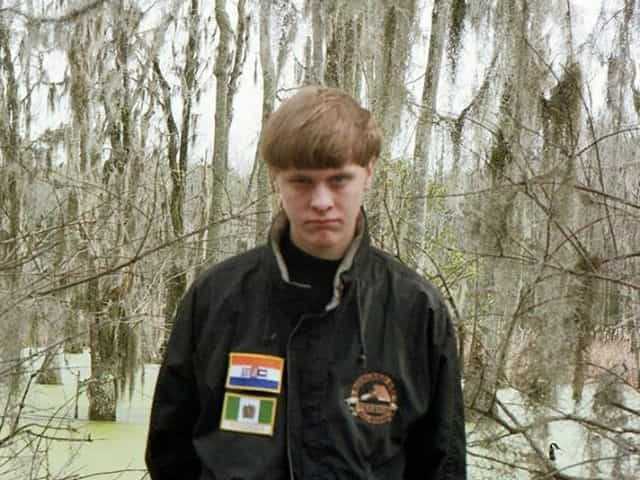

< < < Back
Media Calls For Restraint After San Bernardino Shootings Because The Suspects Aren’t White Men – Return Of Kings
Of all the potential hate crimes you could think of, gunnning down 14 people and severely injuring many others at a center for the disabled is amongst the worst. Yet this is exactly what several Muslim-Americans, including the now dead Syed Farook and his female lover Tashfeen Malik, are alleged to have done in San Bernardino, California.
However, we are not meant to see them as Muslims. That kind of group linkage is apparently only for paler people whose non-leftist views the media despise.
Whereas Elliot Rodger (ironically half-Asian) and Dylann Roof were almost immediately castigated for somehow representing angry misogynistic or racist young white men, media commentators and outlets have been very rapid in explicitly or implicitly ordering the public to remain nonjudgmental after this newest incident. “Disassociate the suspects from the Muslim community!” is the kind of mantra you can expect to hear repeatedly over the coming days.

“He’s not white?! We better run the ‘don’t rush to judgment’ piece then.”
The Los Angeles Times was one of countless outlets quickly spinning the “remain calm” and judge-not-by-creed-or-race narrative:
Outrage depends on the perpetrator’s “privilege”

Dylann Roof was a young white man, so after just 2.3 seconds media generalizations erupted about young men, whites and anyone with a Confederate flag.
All in all, proper channels of inquiry are important. But it beggars belief that the media can help unleash spectacular generalizations about Rodger and Roof’s status as young white or white-enough males with anger issues but demand more thought and deliberation when the alleged perpetrators are Muslims.
And not only were the deceased Farook and Malik supposedly murdering innocents at a disability center, they were doing so in tactical attire. I wonder how restrained the media would have been about matters of race, religion or gender if Dylann Roof had arrived in San Bernardino to kill, as outfitted as a SWAT team member and with a Confederate flag draped over the hood of his car.
Forgetting that whites are the majority of the US population and mass shootings over five people are only part of the overall homicide rate, the media is charmed by stories and opinion pieces exploring America’s apparently white racist and sexist underbelly. We don’t hear about as many Muslim-perpetrated shootings because Muslims are a small minority and white shootings are more politically salient for news outlets, maintaining the veneer of Caucasian privilege and obsessive racism towards minorities.
San Bernardino will probably continue to be turned upside down to promote an agenda of calling out Middle America’s “prejudices” against Muslims, instead of asking deeper questions and focusing on the victims. The San Bernardino tragedy is also interesting as the media dashed to humanize Farook’s relatives and, by proxy, Muslim-Americans in general. They rolled out his brother-in-law, for example.
This gesture was meticulously avoided with Dylann Roof’s family, even though Roof’s sister was so instrumental in having her brother taken into custody after identifying him to authorities. Farook and Mailk’s family may be fine and upright individuals but there is nothing to suggest they are any more fine and upright than the relatives of Dylann Roof.
News stories aren’t simply about reporting the news
The majority of Elliott Rodger’s victims were actually male but the Isla Vista killings were deliberately re-rendered as misogyny.
Focus is oftentimes a cheap reality. Media outlets have a clear choice about what they air or publish. It is impossible to convey every detail of the authorities’ responses, show every person fleeing from the disability center or speak to every concerned relative. These are understandable issues but what crosses the line is an obsession with mixing facts with very selective and pre-planned political roadsigns for readers and viewers.
Like a “turn left” or “turn right” on your car’s Tomtom, the decision of a major newspaper to focus on quotes like “Please do not implicate Islam or Muslims” is designed to lead you to a chosen destination. In this case, it’s a very politically correct one. Conversely, when a young Dylann Roof has the finger pointed at him, the roadsigns take you to a rundown suburb called “Fuck White and Male America”.
Restraint only makes sense if you don’t apply it selectively

Imagine the furore if Syed Farook had been Thomas Wilson or James Anderson.
Fact-based investigations, with enough room for healthy questioning, should be a hallmark of all official and public reactions to alleged crimes. This is a theme Return of Kings has dedicated itself to for its entire existence, especially in relation to allegations of rape and the need to avoid witch-hunts.
Giving the benefit of the doubt to the Muslim community only makes sense if the same courtesy is afforded to all groups, no matter what their so-called historical or privileged status is. But expect that advice to fall on deaf ears so the 24-hour news cycles can have another dig at the rape-loving, minority-hating white men of America.
Read More: Muslim Killer Craig Hicks Followed Far-Left Outlets HuffingtonPost And SPLC